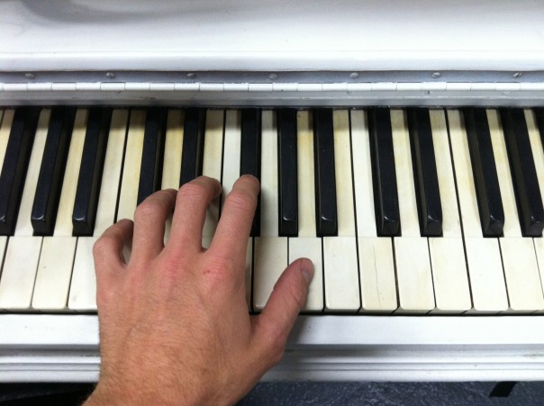

The Importance of Music in Our life😄
The Importance of Music in our life

1.MUSIC IS THE KEY TO CREATIVITY.
Music fuels the mind and thus fuels our creativity. A Creative mind has the
ability to make discoveries and create innovations. The greatest minds and
thinkers like Albert Einstein, Mozart, and Frank Lloyd Wright all had
something in common in that they were constantly exploring their imagination
and creativity. Listening to instrumental music challenges one to listen and
tell a story about what one hears. In the same sense, playing a musical
instrument gives you the ability to tell the story without words. Both
require maximum right brain usage which not only exercises ones creativity
but also ones intellect. The strength of all the Arts including writing,
painting, dance, and theater have the ability to create a similar effect.
2. MUSIC MAKES EDUCATION MORE ENJOYABLE.
Music can be very engaging in the classroom and is a great tool for
memorization. I’m sure if more teachers used song to teach the
multiplication tables, kids would retain that information much quicker.
3.MUSIC CAN CREATE A MOOD AND MAKE YOU FEEL EMOTION.
Music can whisk you away on an extended journey. Music can make time feel
frozen. Music also has the power to suggest movement. All these things deal
with the human senses. I’m sure you can remember a moment where a song has
made you particularly sad or very excited and happy. But how does organized
tones create such an effect on our senses? No one really knows why or where
it comes from but there are many studies that have been done to show that
there is an agreement of which emotions pertain to certain scales, chords,
and harmonies.
4.Music Brings People Together
What is amazing about music is that it is imbedded within all of us.
Everyone can understand it and feel something if they open themselves up.
Playing music with other musicians is an incredible feeling. Some people
describe it as rowing down a river together. There is a certain type of
connection that comes when you make music in a group. The same is true for
those who are listening to music in a group and interacting with music
through Dance. This type of behavior is rooted in our history and our
discoveries as human beings.